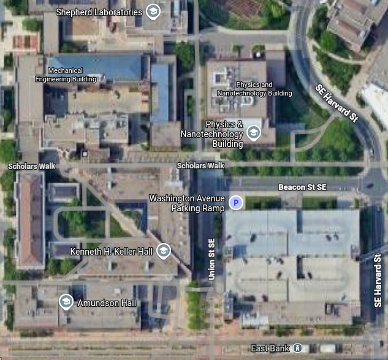

Navigation & Walking Directions
Explore all three event buildings: Keller Hall, Mechanical Engineering and Shepherd Laboratories.
East Bank → KellerKeller → Mechanical EngineeringKeller → ShepherdMechanical Engineering → Shepherd
Tap an X to see the photo from that location. Small numbers match the photo list below. Hover or focus for the stop name. Positions and route lines are approximate; indoor photos share a building location.

Map reference: supplied Google Maps satellite screenshot.